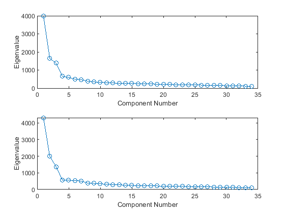
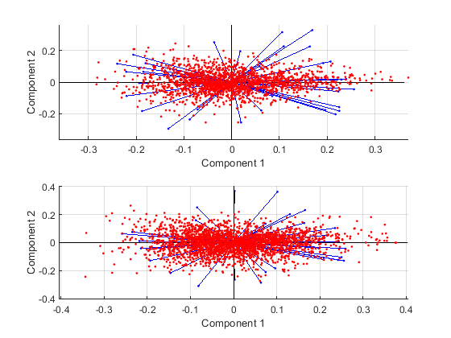

Contents
Get Data
First we must extract all relevant rows from the dataset (where testStimulus = "haus_m_700_normAsl_-26")
w = warning ('off','all'); T = readtable("..\..\likeability_dimension_ratings.csv"); T.herzlich = str2double(T.herzlich); T.herzlich(isnan(T.herzlich)) = round(nanmean(T.herzlich)); %0T = removevars(T, {'herzlich'}); t_male = T(T.speaker_gender == "male",:); t_female = T(T.speaker_gender == "female",:); %to get charcteristica t_male_char= t_male(:,10:end); t_female_char = t_female(:,10:end);
KMO - Test
kmo(t_male_char{:,:})
kmo(t_female_char{:,:})
Kaiser-Meyer-Olkin Measure of Sampling Adequacy: 0.9208 The KMO test yields a degree of common variance marvelous. Kaiser-Meyer-Olkin Measure of Sampling Adequacy: 0.9321 The KMO test yields a degree of common variance marvelous.
PCA - Eigenvalues
calculate Eigenvalues for all principal components using pca - function
subplot(2,1,1); [c,s,male_latent]= pca(table2array(t_male_char)); plot(1:size(male_latent),male_latent, '-o') xlabel('Component Number'); ylabel('Eigenvalue'); [cc,ss,female_latent] = pca(table2array(t_female_char)); subplot(2,1,2); plot(1:size(female_latent),female_latent, '-o') xlabel('Component Number'); ylabel('Eigenvalue');
Point of Inflexion
based on the plot:
male_components_amount = 4; female_components_amount = 4;
PCA - Calculation
now PCA again with reduced amount of component numbers
[male_coeff,male_score,male_latent,male_tsquared,male_explained] = pca(table2array(t_male_char)); [female_coeff,female_score,femal_latent,female_tsquared,female_explained] = pca(table2array(t_female_char));
PCA - Explaination
Percentage of the total variance explained by each principal component
subplot(2,1,1); plot(1:size(male_explained),male_explained, '-o') xlabel('Component Number'); ylabel('Percentage of the total variance'); subplot(2,1,2); plot(1:size(female_explained),female_explained, '-o') xlabel('Component Number'); ylabel('Percentage of the total variance');

PCA - Plot
subplot(2,1,1); biplot(male_coeff(:,1:2),'score',male_score(:,1:2)) subplot(2,1,2); biplot(female_coeff(:,1:2),'score',female_score(:,1:2))
Cronbach Alpha
used function from File Exchange: https://de.mathworks.com/matlabcentral/fileexchange/38320-cronbach-s-alpha?focused=5248118&tab=function
disp("male old: " + CronbachAlpha(t_male_char{:,:})) disp("male new: " + CronbachAlpha(male_score)) disp("female old: " + CronbachAlpha(t_female_char{:,:})) disp("female new: " + CronbachAlpha(female_score))
male old: 0.059755 male new: 2.8953e-16 female old: -0.10019 female new: 4.4759e-17